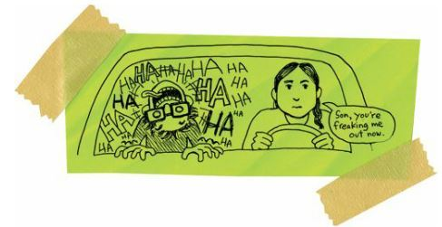
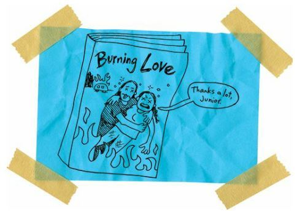

Because Russian Guys Are Not Always Geniuses
After my grandmother died, I felt like crawling into the coffin with her. After my dad’s best friend got shot in the face, I wondered if I was destined to get shot in the face, too.
Considering how many young Spokanes have died in car wrecks, I’m pretty sure it’s my destiny to die in a wreck, too.
Jeez, I’ve been to so many funerals in my short life.
I’m fourteen years old and I’ve been to forty-two funerals.
That’s really the biggest difference between Indians and white people.
A few of my white classmates have been to a grandparent’s funeral. And a few have lost an uncle or aunt. And one guy’s brother died of leukemia when he was in third grade.
But there’s nobody who has been to more than five funerals.
All my white friends can count their deaths on one hand.
I can count my fingers, toes, arms, legs, eyes, ears, nose, penis, butt cheeks, and nipples, and still not get close to my deaths.
And you know what the worst part is? The unhappy part? About 90 percent of the deaths have been because of alcohol.
Gordy gave me this book by a Russian dude named Tolstoy, who wrote: “Happy families are all alike; every unhappy family is unhappy in its own way.” Well, I hate to argue with a Russian genius, but Tolstoy didn’t know Indians. And he didn’t know that all Indian families are unhappy for the same exact reason: the fricking booze.
Yep, so let me pour a drink for Tolstoy and let him think hard about the true definition of unhappy families.
So, okay, you’re probably thinking I’m being extra bitter. And I would have to agree with you. I am being extra bitter. So let me tell you why.
Today, around nine a.m., as I sat in chemistry, there was a knock on the door, and Miss Warren, the guidance counselor, stepped into the room. Dr. Noble, the chemistry teacher, hates being interrupted. So he gave the old stink eye to Miss Warren.
“Can I help you, Miss Warren?” Dr. Noble asked. Except he made it sound like an insult.
“Yes,” she said. “May I speak to Arnold in private?”
“Can this wait? We are going to have a quiz in a few moments.”
“I need to speak with him now. Please.”
“Fine. Arnold, please go with Miss Warren.”
I gathered up my books and followed Miss Warren out into the hallway. I was a little worried. I wondered if I’d done something wrong. I couldn’t think of anything I’d done that would merit punishment. But I was still worried. I didn’t want to get into any kind of trouble.
“What’s going on, Miss Warren?” I asked.
She suddenly started crying. Weeping. Just these big old whooping tears. I thought she was going to fall over on the floor and start screaming and kicking like a two-year-old.
“Jeez, Miss Warren, what is it? What’s wrong?”
She hugged me hard. And I have to admit that it felt pretty dang good. Miss Warren was, like, fifty years old, but she was still pretty hot. She was all skinny and muscular because she jogged all the time. So I sort of, er, physically reacted to her hug.
And the thing is, Miss Warren was hugging me so tight that I was pretty sure she could feel my, er, physical reaction.
I was kind of proud, you know?
“Arnold, I’m sorry,” she said. “But I just got a phone call from your mother. It’s your sister. She’s passed away.”
“What do you mean?” I asked. I knew what she meant, but I wanted her to say something else. Anything else.
“Your sister is gone,” Miss Warren said.
“I know she’s gone,” I said. “She lives in Montana now.”
I knew I was being an idiot. But I figured if I kept being an idiot, if I didn’t actually accept the truth, then the truth would become false.
“No,” Miss Warren said. “Your sister, she’s dead.”
That was it. I couldn’t fake my way around that. Dead is dead.
I was stunned. But I wasn’t sad. The grief didn’t hit me right away. No, I was mostly ashamed of my, er, physical reaction to the hug. Yep, I had a big erection when I learned of my sister’s death.
How perverted is that? How inappropriately hormonal can one boy be?
“How did she die?” I asked.
“Your father is coming to get you,” Miss Warren said. “He’ll be here in a few minutes. You can wait in my office.”
“How did she die?” I asked again.
“Your father is coming to get you,” Miss Warren said again.
I knew then that she didn’t want to tell me how my sister had died. I figured it must have been an awful death.
“Was she murdered?” I asked.
“Your father is coming.”
Man, Miss Warren was a LAME counselor. She didn’t know what to say to me. But then again, I couldn’t really blame her. She’d never counseled a student whose sibling had just died.
“Was my sister murdered?” I asked.
“Please,” Miss Warren said. “You need to talk to your father.”
She looked so sad that I let it go. Well, I mostly let it go. I certainly didn’t want to wait in her office. The guidance office was filled with self-help books and inspirational posters and SAT test books and college brochures and scholarship applications, and I knew that none of that, absolutely none of it, meant shit.
I knew I’d probably tear her office apart if I had to wait there.
“Miss Warren,” I said, “I want to wait outside.”
“But it’s snowing,” she said.
“Well, that would make it perfect, then, wouldn’t it?” I said.
It was a rhetorical question, meaning there wasn’t supposed to be an answer, right? But poor Miss Warren, she answered my rhetorical question.
“No, I don’t think it’s a good idea to wait in the snow,” she said. “You’re very vulnerable right now.”
VULNERABLE! She told me I was vulnerable. My big sister was dead. Of course I was vulnerable. I was a reservation Indian attending an all-white school and my sister had just died some horrible death. I was the most vulnerable kid in the United States. Miss Warren was obviously trying to win the Captain Obvious Award.
“I’m waiting outside,” I said.
“I’ll wait with you,” she said.
“Kiss my ass,” I said and ran.
Miss Warren tried to run after me. But she was wearing heels and she was crying and she was absolutely freaked out by my reaction to the bad news. By my cursing. She was nice. Too nice to deal with death. So she just ran a few feet before she stopped and slumped against the wall.
I ran by my locker, grabbed my coat, and headed out-side. There was maybe a foot of snow on the ground already. It was going to be a big storm. I suddenly worried that my father was going to wreck his car on the icy roads.
Oh, man, wouldn’t that just be perfect?
Yep, how Indian would that be?
Imagine the stories I could tell.
“Yeah, when I was a kid, just after I learned that my big sister died, I also found out that my father died in a car wreck on the way to pick me up from school.”
So I was absolutely terrified as I waited.
I prayed to God that my father would come driving up in his old car.
“Please, God, please don’t kill my daddy. Please, God, please don’t kill my daddy. Please, God, please don’t kill my daddy.”
Ten, fifteen, twenty, thirty minutes went by. I was freezing. My hands and feet were big blocks of ice. Snot ran down my face. My ears were burning cold.
“Oh, Daddy, please, oh, Daddy, please, oh, Daddy, please.”
Oh, man, I was absolutely convinced that my father was dead, too. It had been too long. He’d driven his car off a cliff and had drowned in the Spokane River. Or he’d lost control, slid across the centerline, and spun right into the path of a logging truck.
“Daddy, Daddy, Daddy, Daddy.”
And just when I thought I’d start screaming, and run around like a crazy man, my father drove up.
I started laughing. I was so relieved, so happy, that I LAUGHED. And I couldn’t stop laughing.
I ran down the hill, jumped into the car, and hugged my dad. I laughed and laughed and laughed and laughed.
“Junior,” he said. “What’s wrong with you?”
“You’re alive!” I shouted. “You’re alive!”
“But your sister—,” he said.
“I know, I know,” I said. “She’s dead. But you’re alive. You’re still alive.”
I laughed and laughed. I couldn’t stop laughing. I felt like I might die of laughing.

I couldn’t figure out why I was laughing. But I kept laughing as my dad drove out of Reardan and headed through the storm back to the reservation.
And then, finally, as we crossed the reservation border, I stopped laughing.
“How did she die?” I asked.
“There was a big party at her house, her trailer in Montana—,” he said.
Yep, my sister and her husband lived in some old silver trailer that was more like a TV dinner tray than a home.
“They had a big party—,” my father said.
OF COURSE THEY HAD A BIG PARTY! OF COURSE THEY WERE DRUNK! THEY’RE INDIANS!
“They had a big party,” my father said. “And your sister and her husband passed out in the back bedroom. And somebody tried to cook some soup on a hot plate. And they forgot about it and left. And a curtain drifted in on the wind and caught the hot plate, and the trailer burned down quick.”
I swear to you that I could hear my sister screaming.
“The police say your sister never even woke up,” my father said. “She was way too drunk.”
My dad was trying to comfort me. But it’s not too comforting to learn that your sister was TOO FREAKING DRUNK to feel any pain when she BURNED TO DEATH!
And for some reason, that thought made me laugh even harder. I was laughing so hard that I threw up a little bit in my mouth. I spit out a little piece of cantaloupe. Which was weird, because I don’t like cantaloupe. I’ve hated cantaloupe since I was a little kid. I couldn’t remember the last time I’d eaten the evil fruit.
And then I remembered that my sister had always loved cantaloupe.
Ain’t that weird?
It was so freaky that I laughed even harder than I’d already been laughing. I started pounding the dashboard and stomping on the floor.
I was going absolutely insane with laughter.
My dad didn’t say a word. He just stared straight ahead and drove home. I laughed the whole way. Well, I laughed until we were about halfway home, and then I fell asleep.
Snap, just like that.
Things had gotten so intense, so painful, that my body just checked out. Yep, my mind and soul and heart had a quick meeting and voted to shut down for a few repairs.
And guess what? I dreamed about cantaloupe!
Well, I dreamed about a school picnic I went to way back when I was seven years old. There were hot dogs and hamburgers and soda pop and potato chips and watermelon and cantaloupe.
I ate, like, seven pieces of cantaloupe.
My hands and face were way sticky and sweet.
I’d eaten so much cantaloupe that I’d turned into a cantaloupe.
Well, I finished my lunch and I ran around the playground, laughing and screaming, when I felt this tickle on my cheek. I reached up to scratch my face and squished the wasp that had been sucking sugar off my cheek.
Have you ever been stung in the face? Well, I have, and that’s why I hate cantaloupe.
So, I woke up from this dream, this nightmare, just as my dad drove the car up to our house.
“We’re here,” he said.
“My sister is dead,” I said.
“Yes.”
“I was hoping I dreamed that,” I said.
“Me, too.”
“I dreamed about that time I got stung by the wasp,” I said.
“I remember that,” Dad said. “We had to take you to the hospital.”
“I thought I was going to die.”
“We were scared, too.”
My dad started to cry. Not big tears. Just little ones. He breathed deep and tried to stop them. I guess he wanted to be strong in front of his son. But it didn’t work. He kept crying.
I didn’t cry.
I reached out, wiped the tears off my father’s face, and tasted them.
Salty.
“I love you,” he said.
Wow.
He hardly ever said that to me.
“I love you, too,” I said.
I never said that to him.
We walked into the house.
My mom was curled into a ball on the couch. There were, like, twenty-five or thirty cousins there, eating all of our food.
Somebody dies and people eat your food. Funny how that works.
“Mom,” I said.
“Oh, Junior,” she said and pulled me onto the couch with her.
“I’m sorry, Mom. I’m so sorry.”
“Don’t leave me,” she said. “Don’t ever leave me.”
She was freaking out. But who could blame her? She’d lost her mother and her daughter in just a few months. Who ever recovers from a thing like that? Who ever gets better? I knew that my mother was now broken and that she’d always be broken.
“Don’t you ever drink,” my mother said to me. She slapped me. Once, twice, three times. She slapped me HARD. “Promise me you’ll never drink.”
“Okay, okay, I promise,” I said. I couldn’t believe it. My sister killed herself with booze and I was the one getting slapped.
Where was Leo Tolstoy when I needed him? I kept wishing he’d show up so my mother could slap him instead.
Well, my mother quit slapping me, thank God, but she held on to me for hours. Held on to me like I was a baby. And she kept crying. So many tears. My clothes and hair were soaked with her tears.
It was, like, my mother had given me a grief shower, you know?
Like she’d baptized me with her pain.
Of course, it was way too weird to watch. So all of my cousins left. My dad went in his bedroom.
It was just my mother and me. Just her tears and me.
But I didn’t cry. I just hugged my mother back and wanted all of it to be over. I wanted to fall asleep again and dream about killer wasps. Yeah, I figured any nightmare would be better than my reality.
And then it was over.
My mother fell asleep and let me go.
I stood and walked into the kitchen. I was way hungry but my cousins had eaten most of our food. So all I had for dinner were saltine crackers and water.
Like I was in jail.
Man.
Two days later, we buried my sister in the Catholic graveyard down near the powwow ground.
I barely remember the wake. I barely remember the funeral service. I barely remember the burial.
I was in this weird fog.
No.
It was more like I was in this small room, the smallest room in the world. I could reach out and touch the walls, which were made out of greasy glass. I could see shadows but I couldn’t see details, you know?
And I was cold.
Just freezing.
Like there was a snowstorm blowing inside of my chest.
But all of that fog and greasy glass and snow disappeared when they lowered my sister’s coffin into the grave. And let me tell you, it had taken them forever to dig that grave in the frozen ground. As the coffin settled into the dirt, it made this noise, almost like a breath, you know?
Like a sigh.
Like the coffin was settling down for a long, long nap, for a forever nap.
That was it.
I had to get out of there.
I turned and ran out of the graveyard and into the woods across the road. I planned on running deep into the woods. So deep that I’d never be found.
But guess what?
I ran full-speed into Rowdy and sent us both sprawling.
Yep, Rowdy had been hiding in the woods while he watched the burial.
Wow.
Rowdy sat up. I sat up, too.
We sat there together.
Rowdy was crying. His face was shiny with tears.
“Rowdy,” I said. “You’re crying.”
“I ain’t crying,” he said. “You’re crying.”
I touched my face. It was dry. No tears yet.
“I can’t remember how to cry,” I said.
That made Rowdy sort of choke. He gasped a little. And more tears rolled down his face.
“You’re crying,” I said.
“No, I’m not.”
“It’s okay; I miss my sister, too. I love her.”
“I said I’m not crying.”
“It’s okay.”
I reached out and touched Rowdy’s shoulder. Big mistake. He punched me. Well, he almost punched me. He threw a punch but he MISSED!
ROWDY MISSED A PUNCH!
His fist went sailing over my head.
“Wow,” I said. “You missed.”
“I missed on purpose.”
“No, you didn’t. You missed because your eyes are FILLED WITH TEARS!”
That made me laugh.
Yep, I started laughing like a crazy man again.
I rolled around on the cold, frozen ground and laughed and laughed and laughed.
I didn’t want to laugh. I wanted to stop laughing. I wanted to grab Rowdy and hang on to him.
He was my best friend and I needed him.
But I couldn’t stop laughing.
I looked at Rowdy and he was crying hard now.
He thought I was laughing at him.
Normally, Rowdy would have absolutely murdered anybody who dared to laugh at him. But this was not a normal day.
“It’s all your fault,” he said.
“What’s my fault?” I asked.
“Your sister is dead because you left us. You killed her.”
That made me stop laughing. I suddenly felt like I might never laugh again.
Rowdy was right.
I had killed my sister.
Well, I didn’t kill her.
But she only got married so quickly and left the rez because I had left the rez first. She was only living in Montana in a cheap trailer house because I had gone to school in Reardan. She had burned to death because I had decided that I wanted to spend my life with white people.
It was all my fault.
“I hate you!” Rowdy screamed. “I hate you! I hate you!”
And then he jumped up and ran away.
Rowdy ran!
He’d never run away from anything or anybody. But now he was running.
I watched him disappear into the woods.
I wondered if I’d ever see him again.
The next morning, I went to school. I didn’t know what else to do. I didn’t want to sit at home all day and talk to a million cousins. I knew my mother would be cooking food for everybody and that my father would be hiding out in his bedroom again.
I knew everybody would tell stories about Mary.
And the whole time, I’d be thinking, “Yeah, but have you ever heard the story about how I killed my sister when I left the rez?”
And the whole time, everybody would be drinking booze and getting drunk and stupid and sad and mean. Yeah, doesn’t that make sense? How do we honor the drunken death of a young married couple?
HEY, LET’S GET DRUNK!
Okay, listen, I’m not a cruel bastard, okay? I know that people were very sad. I knew that my sister’s death made everybody remember all the deaths in their life. I know that death is never added to death; it multiplies. But still, I couldn’t stay and watch all of those people get drunk. I couldn’t do it. If you’d given me a room full of sober Indians, crying and laughing and telling stories about my sister, then I would have gladly stayed and joined them in the ceremony.
But everybody was drunk.
Everybody was unhappy.
And they were drunk and unhappy in the same exact way.
So I fled my house and went to school. I walked through the snow for a few miles until a white BIA worker picked me up and delivered me to the front door.
I walked inside, into the crowded hallways, and all sorts of boys and girls, and teachers, came up and hugged me and slapped my shoulder and gave me little punches in the belly.
They were worried for me. They wanted to help me with my pain.
I was important to them.
I mattered.
Wow.
All of these white kids and teachers, who were so suspicious of me when I first arrived, had learned to care about me. Maybe some of them even loved me. And I’d been so suspicious of them. And now I care about a lot of them. And loved a few of them.
Penelope came up to me last.
She was WEEPING. Snot ran down her face and it was still sort of sexy.
“I’m so sorry about your sister,” she said.
I didn’t know what to say to her. What do you say to people when they ask you how it feels to lose everything? When every planet in your solar system has exploded?
